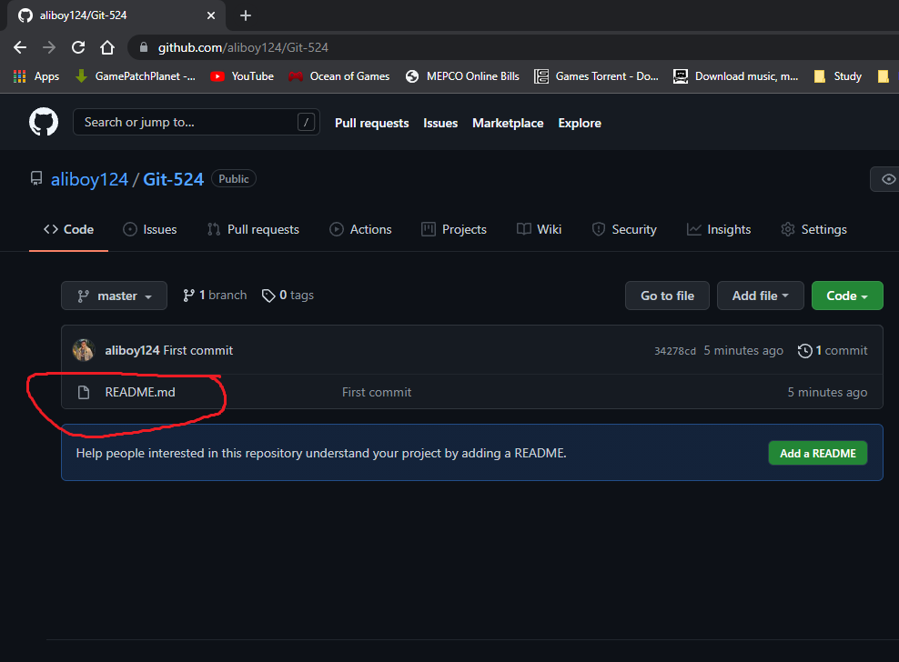
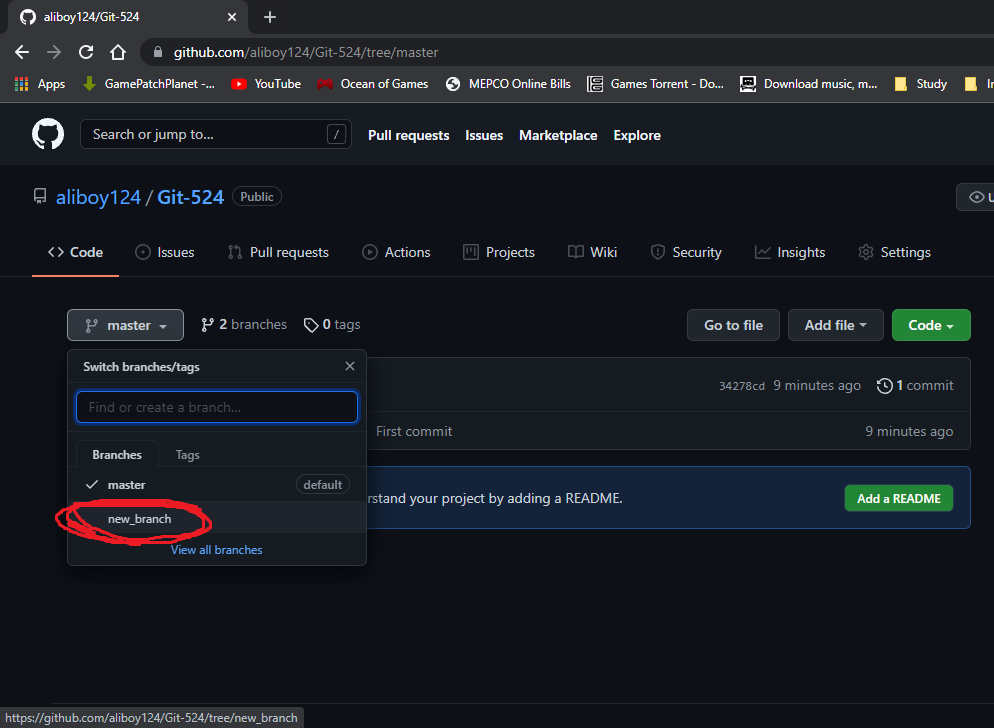

Muhammad Ali - BSEF18A524
What is and why use VMS?
Version management system such as Github is used to allow teams to work on software development simultaneously. It allows for a single place where all finalized code is placed and can be accessed easily. This way multiple teams or members can work on a single project without worrying about distrubing other workflows. It also allows 'version management' which means that a single latest version of the software is present which is accessible to all. This removes the need to store multiple version of software and unnecessary sharing of files among team members.
What are Git, repos and branches?
Git is the version management tool of Github. We can use it to create and modify repositories and access other features. Repositories or repos for short are workspaces hosted by github where all files and code are present. This workspace can be shared among multiple people or kept private. Branches are further subdivison of the repository. Branches are mainly used to make the workflow modular and keep different features independent and isolated from others. In the end all branches can be merged to the main branch for release version.
Get Git here.
Creating a Directory
First we need to create a Directory on your machine which will hold our files.

Creating README.md file
Almost all repositories on github have a README.md file. This file contains the description as well as setup instruction for the repo. We'll go ahead and create and empty file.

Initialize Git
Now that we have a Directory as well as a file in it, we need to Initialize git in the directory. This will create .git which means that this directory is a github repository now.
$ git init
Staging changes
Staging changes in a repo(short for repository) simply marks the file(s) for commit. In simple terms, we need to stage our changes before we confirm them. Let's go ahead and stage all the changes in our repo now. For a specific file:
$ git add filenameand for all files:
$ git add .
Status of files
We can check the staged files to make sure all changes are desirable, by using the following command:
$ git status
Commit changes
Commit changes means we are confirming the changes. Note that changes need to be staged before they can be commited.With every commit a message is also added to let others now what changes we have made. In the below command '-m' is a flag which means that a message will follow the command. In the example below, the message is 'First commit'.
$ git commit -m 'your_message_here'
Adding Origin
Before we go further, we need to understand that what we have is on our local machine so we need to link it to the origin(the remote github repository) before we can upload our changes. In order to do so, first we need the link to our github repo as seen below:

Once we have the link we can use the following command to link our local to the remote/origin:
$ git remote add origin your_repo_link_hereTo list all remote origins we have linked to, we can use:
$ git remote -v
Pushing to remote
Push in git means to 'upload'. Here we use it to upload our changes to the remote repo so our changes are saved there. Please note that git push requires and origin to be added first.
$ git push -u origin master
We can see our changes to the remote here:
Branches
Git branch commands are pretty straightforward. To list all and current branches we use:
$ git branchWe can also create a new branch with
$ git branch your_branch_name
Git Checkout
So far we've created new branches but as evident in the last picture, we haven't switched to our new branch. Keeping this in mind is very important when working with multiple branches. In order to do this we use the following command:
$ git checkout your_branch_name
Pushing branches
As in files, our new branch is present on our local machine, not on the remote repo. So others cannot see or access this branch yet. In order to make it available we need to push it just as we did with files above.
$ git push -u origin your_branch_name
Our new branch can be seen on the repo:
Commit Logs
We can list all our commits by using the following command:
$ git log
Recap Walkthrough
Below images will recap all above commands and show a sample workflow, this time by adding new image file to our repo.
Cloning repositories
So far we have been working on our local machine and pushing the changes. What if we need to work on a repo that someone else has created already? In order to do so we need to 'clone' that repo on our machine. Note that a cloned repo does not require the 'git init' command.
$ git clone repo_link
Pulling
We have discussed the use of 'push' to upload our changes, but github has a simultaneous workflow which means that multiple people can work on the same thing. So we need to 'get' the changes made by someone else or changes not yet present on the local machine. In order to do so we use the 'pull' command. It also requires an origin added beforehand. In order to demonstrate this, we will create a file on the remote.

Once the changes have been made we will 'pull' them into our repo. Note the output of the 'dir' command before and after the use of 'git pull':
$ git pull origin master